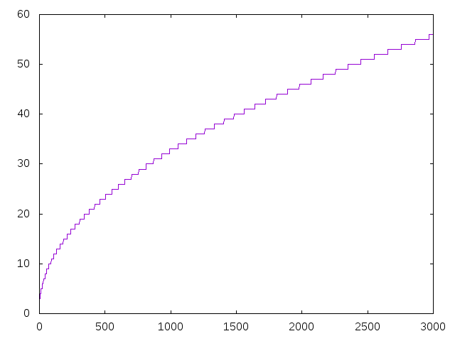

Números que no son cuadrados
Definir las funciones
noCuadrados :: [Integer] graficaNoCuadrados :: Integer -> IO ()
tales que
- noCuadrados es la lista de los números naturales que no son cuadrados. Por ejemplo,
λ> take 25 noCuadrados [2,3,5,6,7,8,10,11,12,13,14,15,17,18,19,20,21,22,23,24,26,27,28,29,30]
- (graficaNoCuadrados n) dibuja las diferencias entre los n primeros elementos de noCuadrados y sus posiciones. Por ejemplo, (graficaNoCuadrados 300) dibuja

(graficaNoCuadrados 3000) dibuja

(graficaNoCuadrados 30000) dibuja

Comprobar con QuickCheck que el término de noCuadrados en la posición n-1 es (n + floor(1/2 + sqrt(n))).
Soluciones
import Data.List (genericIndex) import Graphics.Gnuplot.Simple import Test.QuickCheck noCuadrados :: [Integer] noCuadrados = aux [0..] cuadrados where aux xs (y:ys) = as ++ aux bs ys where (as,_:bs) = span (<y) xs cuadrados :: [Integer] cuadrados = [x^2 | x <- [0..]] graficaNoCuadrados :: Integer -> IO () graficaNoCuadrados n = plotList [ Key Nothing , PNG ("Numeros_que_no_son_cuadrados_" ++ show n ++ ".png") ] (zipWith (-) noCuadrados [0..n-1]) prop_noCuadrados :: (Positive Integer) -> Bool prop_noCuadrados (Positive n) = noCuadrados `genericIndex` (n-1) == n + floor (1/2 + sqrt (fromIntegral n))